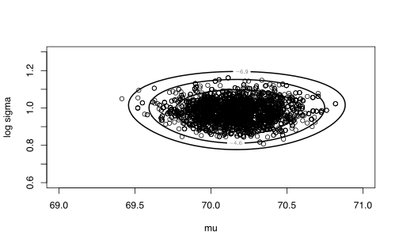
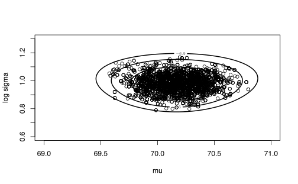
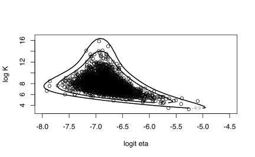
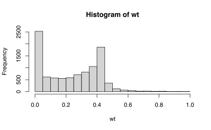
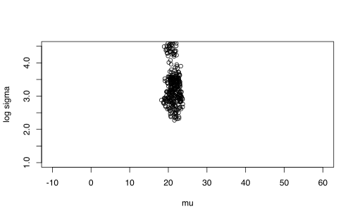
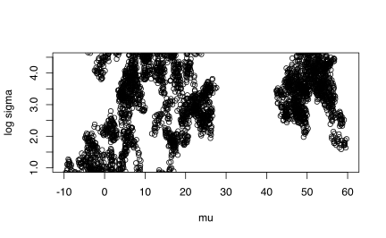
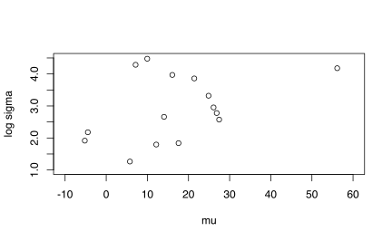

Capítulo 9 Cálculo Bayesiano Computacional
9.1 Repaso de Estadística Bayesiana
9.1.1 Modelo de un parámetro
Vamos a considerar el ejemplo en la sección 3.3 del (Albert et al. 2009). En este caso se quiere estimar la tasa de éxito en transplantes de corazón en un hospital de EEUU. Suponga que en ese hospital hay \(n\) transplantes y \(y\) es el número de muertes en el transcurso de 30 días del transplante. Si se sabe el número esperado de muertes \(e\) a través de un modelo auxiliar, entonces un modelo sencillo para \(y\) es asumir que: \[y\sim \text{Poisson}(e\lambda)\] donde \(\lambda\) es la tasa de mortalidad por unidad de exposición y tiempo.
Posible solución: estimar \(\hat \lambda=y/e\), pero el estimador es malo si hay pocas muertes observadas \(y\).
Solución bayesiana: Considere una previa conjugada (gamma) para \(\lambda\): \[p(\lambda)\propto \lambda^{\alpha-1}\exp(-\beta \lambda)\] además, suponga que se cuenta con información externa de un grupo pequeño de hospitales con condiciones similares a la del hospital de interés, es decir se cuenta con muertes \(z_j\) y exposición \(o_j\) para diez hospitales (\(j=1,\ldots,10\)). Asuma que: \[z_j\sim \text{Poisson}(o_j\lambda)\] asignamos una previa no-informativa a \(p(\lambda)\propto \lambda^{-1}\) y se obtiene un previa propuesta para \(\lambda\): \[p(\lambda)\propto \lambda^{\sum_{j=1}^{10}z_j-1}\exp{\left(-\lambda\sum_{j=1}^{10} o_j\right)}\]y Suponga que \(\alpha:=\sum z_j=16\) y \(\beta:=\sum o_j=15174\). Si para el hospital de interés \(y_{obs}\) es el número observado de muertes y \(e\) es la exposición entonces la distribución posterior de \(\lambda\) es: \[g(\lambda|y_{obs})\sim \Gamma(\alpha+y_{obs},\beta+e)\] y la densidad predictiva de \(y\) es (Ejercicio): \[f(y)=\frac{f(y|\lambda)p(\lambda)}{g(\lambda|y_{obs})}\]
donde \(f(y|\lambda)\sim \text{Poisson}(e\lambda)\) (verosimilitud). Supongamos dos posibles hospitales:
- Hospital A: Se observa una muerte con 66 personas expuestas. Cálculo de la densidad posterior y densidad predictiva con \(\lambda = \alpha/\beta\):
alpha <- 16
beta <- 15174
yobs <- 1
ex <- 66
y <- 0:10
lam <- alpha/beta
fy <- dpois(y, lam * ex) * dgamma(lam, shape = alpha,
rate = beta)/dgamma(lam, shape = alpha + y, rate = beta +
ex)
dpred <- tibble(y, fy)
ggplot(dpred) + geom_line(mapping = aes(x = y, y = fy)) +
geom_vline(xintercept = yobs, col = 2) + theme_bw()por lo tanto una muerte no es un valor inusual en el comportamiento de muertes bajo transplantes. La comparación de las densidades posterior y previa de lambda:
set.seed(1)
lambda_prev <- rgamma(1000, shape = alpha, rate = beta)
lambda_post <- rgamma(1000, shape = alpha + y, rate = beta +
ex)
datoslambda <- tibble(Previa = lambda_prev, Posterior = lambda_post) %>%
pivot_longer(cols = everything())
ggplot(data = datoslambda) + geom_density(mapping = aes(x = value,
color = name)) + theme_bw() + theme(legend.title = element_blank())
- Hospital B: 4 muertes en 1767 expuestos. Mismos cálculos:
alpha <- 16
beta <- 15174
yobs <- 4
ex <- 1767
y <- 0:10
lam <- alpha/beta
fy <- dpois(y, lam * ex) * dgamma(lam, shape = alpha,
rate = beta)/dgamma(lam, shape = alpha + y, rate = beta +
ex)
dpred <- tibble(y, fy)
ggplot(dpred) + geom_line(mapping = aes(x = y, y = fy)) +
geom_vline(xintercept = yobs, col = 2) + theme_bw()
set.seed(1)
lambda_prev <- rgamma(1000, shape = alpha, rate = beta)
lambda_post <- rgamma(1000, shape = alpha + y, rate = beta +
ex)
datoslambda <- tibble(Previa = lambda_prev, Posterior = lambda_post) %>%
pivot_longer(cols = everything())
ggplot(data = datoslambda) + geom_density(mapping = aes(x = value,
color = name)) + theme_bw() + theme(legend.title = element_blank())9.1.2 Modelo de más de un parámetro
Se usará el ejemplo de la sección 4.2 del (Albert et al. 2009) para ilustrar la inferencia bayesiana conjugada en el caso de más un parámetro. Suponga que se tiene datos del tiempo en completar la maratón de Nueva York para 20 atletas entre 20 y 29 años y asumimos que la muestra proviene de una \(N(\mu,\sigma^2)\). Si asumimos la previa no informativa:
\[g(\mu,\sigma^2) \propto 1/\sigma^2\]
entonces la distribución posterior de \((\mu,\sigma^2)\) es: \[g(\mu,\sigma^2|y)\propto \frac{1}{(\sigma^2)^{n/2+1}}\exp{\left(-\frac{1}{2\sigma^2}\left(S+n(\mu-\bar y)^2\right)\right)}\]
donde \(n\) es el tamaño de muestra, \(\bar y\) es la media empírica y \(S=\sum_{i=1}^n(y_i-\bar y)^2\). Recuerden que la distribución posterior conjunta satisface:
- La distribución posterior de \(\mu\) condicional en \(\sigma^2\) se distribuye como \(N(\bar y,\sigma/\sqrt{n})\).
- La distribución posterior marginal de \(\sigma^2\) se distribuye según \(S\chi_{n-1}^{-2}\) (\(S\) veces una chi-cuadrada inversa con \(n-1\) grados de libertad).
Cargamos los datos de los 20 atletas:
library(LearnBayes)
head(marathontimes)## time
## 1 182
## 2 201
## 3 221
## 4 234
## 5 237
## 6 251y graficamos un diagrama de contorno de la distribución posterior de \(\mu,\sigma^2\):
attach(marathontimes)
mycontour(normchi2post, c(220, 330, 500, 9000), time,
xlab = "media", ylab = "varianza") y les agregamos una muestra aleatoria de tamaño 1000 de la distribución posterior conjunta, generada a través de las distribuciones marginales:
y les agregamos una muestra aleatoria de tamaño 1000 de la distribución posterior conjunta, generada a través de las distribuciones marginales:
S <- sum((time - mean(time))^2)
n <- length(time)
sigma2 <- S/rchisq(1000, n - 1)
mu <- rnorm(1000, mean = mean(time), sd = sqrt(sigma2)/sqrt(n))
mycontour(normchi2post, c(220, 330, 500, 9000), time,
xlab = "media", ylab = "varianza")
points(mu, sigma2)
Si estamos interesados en hacer inferencia de \(\mu\), podemos calcular un intervalo de credibilidad al 95%, usando la muestra marginal:
quantile(mu, c(0.025, 0.975))## 2.5% 97.5%
## 254.9617 300.8669y también inferencia sobre \(\sigma\):
quantile(sqrt(sigma2), c(0.025, 0.975))## 2.5% 97.5%
## 37.66930 72.69096o aún sobre otros parámetros, por ejemplo el coeficiente de variación (\(CV=\sigma/\mu\)):
quantile(sqrt(sigma2)/mu, c(0.025, 0.975))## 2.5% 97.5%
## 0.1357104 0.26342299.2 Motivación: Cálculo de Integrales
Recuerden que según el teorema de Bayes, si observamos datos \(y\) a partir de una verosimilitud \(f(y|\theta)\) y se le asigna al parámetro \(\theta\) una previa \(g(\theta)\), entonces:
\[g(\theta|y)\propto g(\theta)f(y|\theta)\]
Problema: tratar de manejar la distribución posterior de \(\theta\) desde un punto de vista computacional con el fin de hacer inferencia.
Los procesos de inferencia requieren el cálculo o aproximación de integrales, por ejemplo:
- Valor esperado de una función de \(\theta\):
\[E(h(\theta)|y)=\frac{\int h(\theta)g(\theta)f(y|\theta) d\theta}{\int g(\theta)f(y|\theta) d\theta}\]
- Probabilidad posterior de que \(h(\theta) \in A\):
\[P(h(\theta) \in A|y)=\frac{\int_{h(\theta) \in A} g(\theta)f(y|\theta) d\theta}{\int g(\theta)f(y|\theta) d\theta}\] - Densidades marginales. Si \(\theta=(\theta_1,\theta_2)\):
\[g(\theta_1|y)\propto \int g(\theta_1,\theta_2|y)d\theta_2\]
9.3 Ejemplo base: modelo beta-binomial.
En este ejemplo se estimará las tasas de muerte por cáncer gástrico en una población de hombres entre 45 y 64 años. Para ello se tiene datos de muertes \(y_j\) y exposición \(n_j\) para 20 ciudades en Missouri:
data("cancermortality")
head(cancermortality)## y n
## 1 0 1083
## 2 0 855
## 3 2 3461
## 4 0 657
## 5 1 1208
## 6 1 1025Un primer intento de modelación podría considerar \(y_j\sim \text{Binomial}(p,n_j)\) pero en este caso se puede comprobar que el modelo binomial no logra captar la variabilidad de las muertes totalmente. Otro intento de modelación que no tiene ese problema es un modelo beta-binomial con media \(\eta\) y precisión \(K\): \[f(y_j|\eta,K)={n_j \choose y_j}\frac{B(K\eta+y_j,K(1-\eta)+n_j-y_j)}{B(K\eta,K(1-\eta))}\] con previa no informativa: \[g(\eta,K)\propto \frac{1}{\eta(1-\eta)}\frac{1}{(1+K)^2}\] entonces la densidad posterior de los parámetros sería: \[g(\eta,K|\text{datos})\propto \frac{1}{\eta(1-\eta)}\frac{1}{(1+K)^2} \prod_{j=1}^{20}\frac{B(K\eta+y_j,K(1-\eta)+n_j-y_j)}{B(K\eta,K(1-\eta))}\] donde \(0<\eta<1\), \(K>0\) y \(B(\cdot,\cdot)\) es la función beta. La función betabinexch0 contiene la implementación de la log-densidad posterior de \(\eta,K\):
mycontour(betabinexch0, c(0.0001, 0.003, 1, 20000),
cancermortality, xlab = "eta", ylab = "K")y note la gran asimetría en el comportamiento de la densidad conjunta, especialmente en la dirección de la variable \(K\). Por el dominio de las variables \(K\) y \(\eta\), entonces se transforman según: \[\theta_1=\text{logit}(\eta)=\log\left(\frac{\eta}{1-\eta}\right),\quad \theta_2=\log(K)\] y usando el teorema de cambio de variable en densidades: \[g_1(\theta_1,\theta_2|\text{datos})=g\left(\frac{e^{\theta_1}}{1+e^{\theta_2}},e^{\theta_2}\right)\frac{e^{\theta_1+\theta_2}}{(1+e^{\theta_2})^2}\] \(g_1\) está implementada en la función betabinexch y el gráfico de contorno es más manejable ahora desde el punto de vista computacional:
mycontour(betabinexch, c(-8, -4.5, 3, 16.5), cancermortality,
xlab = "logit eta", ylab = "log K")
Definitivamente esta es una distribución posterior a la que no se le puede aplicar las técnicas usuales para hacer inferencia (caso no conjugado). Se va a considerar dos formas de realizar inferencia:
- Aproximación de Laplace.
- Simulación Monte Carlo.
9.4 Aproximación de Laplace
Considere el logaritmo de la densidad posterior proporcional: \[h(\theta,y)=\log(g(\theta)f(y|\theta))\] Suponga que \(\hat \theta\) es la moda de \(\theta\). Un desarrollo de Taylor alrededor de \(\hat \theta\) para \(h(\theta)\) da la siguiente aproximación: \[h(\theta)\approx h(\hat \theta)+\frac 1 2(\theta-\hat \theta)^Th''(\hat \theta)(\theta-\hat \theta)\] Por lo tanto podemos aproximar el comportamiento en distribución de \(\theta\) como: \[\theta \sim N(\hat \theta,V)\] donde \(V=(-h''(\hat \theta))^{-1}\). Con el fin de encontrar la moda \(\hat \theta\) se puede usar algún algoritmo para encontrar máximos en funciones de varias variables, por ejemplo el método de Newton o el de Nelder-Mead (default en optim). La función laplace tiene el método de optimización implementado tomando como argumentos la log-densidad posterior, un valor inicial de los parámetros y el conjunto de datos.
Por ejemplo, en el caso anterior:
fit <- laplace(betabinexch, c(-7, 6), cancermortality)
fit## $mode
## [1] -6.819793 7.576111
##
## $var
## [,1] [,2]
## [1,] 0.07896568 -0.1485087
## [2,] -0.14850874 1.3483208
##
## $int
## [1] -570.7743
##
## $converge
## [1] TRUEdonde el punto (-7,6) se puede inferir a través del gráfico de contorno anterior. Por lo tanto podemos aproximar la densidad posterior conjunta de \((\text{logit}(\eta),\log K)\) se puede aproximar como una normal multivariada con media fit$mode y varianza fit.var. Un gráfico de contorno de la aproximación es:
npar <- list(m = fit$mode, v = fit$var)
mycontour(lbinorm, c(-8, -4.5, 3, 16.5), npar, xlab = "logit eta",
ylab = "log K")También podemos hacer inferencia de los parámetros:
se <- sqrt(diag(fit$var))
lb <- fit$mode - qnorm(0.975) * se
ub <- fit$mode + qnorm(0.975) * se
etainv <- c(lb[1], ub[1])
Kinv <- c(lb[2], ub[2])
exp(etainv)/(1 + exp(etainv))## [1] 0.0006291199 0.0018904899exp(Kinv)## [1] 200.3879 18995.6680son intervalos de predicción al 95% para \(\eta\) y \(K\) respectivamente.
9.5 Simulación
9.5.1 Simulación Monte Carlo
Suponga que \(g(\theta|y)\) es la densidad posterior de \(\theta\) y queremos estimar una característica de \(\theta\), a través de la función \(h(\theta)\). La media posterior de \(h(\theta)\) es: \[E(h(\theta)|y)=\int h(\theta)g(\theta|y)d\theta\] y suponga que podemos simular una muestra independiente \(\theta^1,\ldots,\theta^m\) de \(g(\theta|y)\). El estimador Monte Carlo del valor esperado es: \[\bar h =\frac 1 m\sum_{j=1}^mh(\theta^j) \] con su error estándar: \[se_{\bar h}=\sqrt{\frac{1}{m(m-1)}\sum_{j=1}^m\left(h(\theta^j)-\bar h\right)^2}\] En el caso en que no es posible obtener muestras de la densidad posterior, entonces se pueden definir algoritmos que aproximan la generación de muestras.
9.5.2 Muestreo por rechazo
Suponga que queremos obtener una muestra de \(g(\theta|y)\) donde la constante de normalización no es conocida. Suponga que conocemos una densidad \(p(\theta)\) que satisface:
- Fácil de obtener muestras.
- \(p\) aproxima \(g\) en términos de localización y escala.
- Para todo \(\theta\): \(g(\theta|y)\leq cp(\theta)\), para una constante \(c\).
Algoritmo:
- Simule una realización independiente de \(\theta \sim p\) y \(U\sim Unif(0,1)\).
- Si \(U\leq g(\theta|y)/(cp(\theta))\) entonces acepte \(\theta\), caso contrario rechace la muestra propuesta.
- Continue 1 y 2 hasta que se haya generado un número deseado de muestras.
Nota: un algoritmo eficiente tiene una tasa de aceptación de muestras alta.
En el ejemplo anterior, seleccionamos \(p(\theta)\) una distribución \(t\) multivariada con parámetro de locación igual a la media aproximada del método de Laplace, matriz de escala igual a 2 veces la matriz de varianza aproximada según Laplace y 4 grados de libertad. De esta forma nos aseguramos que \(g(\theta|y)/p(\theta)\) está acotado superiormente.
Con el fin de encontrar \(c\), maximizamos la diferencia de logaritmos entre \(g(\theta|y)\) y la propuesta \(p(\theta)\), usando la función laplace:
betabinT <- function(theta, datapar) {
data <- datapar$data
tpar <- datapar$par
d <- betabinexch(theta, data) - dmt(theta, mean = c(tpar$m),
S = tpar$var, df = tpar$df, log = TRUE)
return(d)
}definimos parámetros:
tpar <- list(m = fit$mode, var = 2 * fit$var, df = 4)
datapar <- list(data = cancermortality, par = tpar)y resolvemos:
start <- c(-6.9, 12.4)
fit1 <- laplace(betabinT, start, datapar)
fit1$mode## [1] -6.888963 12.421993y el valor máximo de las diferencias de logaritmos es:
dmax <- betabinT(fit1$mode, datapar)
dmax## [1] -569.2829el algoritmo sería:
set.seed(1)
n <- 10000
theta <- rmt(n, mean = c(tpar$m), S = tpar$var, df = tpar$df)
lf <- map_dbl(1:10000, ~betabinexch(theta[., ], cancermortality))
lg <- dmt(theta, mean = c(tpar$m), S = tpar$var, df = tpar$df,
log = TRUE)
prob = exp(lf - lg - dmax)
thetaRS <- theta[runif(n) < prob, ]la tasa de aceptación es:
dim(thetaRS)[1]/10000## [1] 0.2447y dibujamos el gráfico de contorno con la muestra obtenida:
mycontour(betabinexch, c(-8, -4.5, 3, 16.5), cancermortality,
xlab = "logit eta", ylab = "log K")
points(thetaRS[, 1], thetaRS[, 2])
9.6 Muestreo por importancia
Suponga que queremos calcular el siguiente valor esperado posterior: \[E(h(\theta)|y)=\frac{\int h(\theta)g(\theta)f(y|\theta)d\theta}{\int g(\theta)f(y|\theta)d\theta}\]
en el caso en donde no se puede obtener una muestra directa de la distribución posterior y usar Monte Carlo por ejemplo. Usemos la densidad propuesta \(p(\theta)\) que aproxima la posterior:
\[\begin{align*} E(h(\theta)|y)&=\frac{\int h(\theta)\frac{g(\theta)f(y|\theta)}{p(\theta)}p(\theta)d\theta}{\int \frac{g(\theta)f(y|\theta)}{p(\theta)}p(\theta)d\theta}\\ &=\frac{\int h(\theta)w(\theta)p(\theta)d\theta}{\int w(\theta)p(\theta)d\theta} \end{align*}\]
donde \(w(\theta)=\frac{g(\theta)f(y|\theta)}{p(\theta)}\). Si \(\theta^1,\ldots,\theta^{m}\sim p(\theta)\) entonces el estimador de muestreo por importancia de la media posterior es: \[\bar h_{IS}=\frac{\sum_{j=1}^mh(\theta^j)w(\theta^j)}{\sum_{j=1}^mw(\theta^j)}\] con error estándar: \[se_{\bar h_{IS}}=\frac{\sqrt{\sum_{j=1}^m((h(\theta^j)-\bar h_{IS})w(\theta^j))^2}}{\sum_{j=1}^mw(\theta^j)}\] Nota: al igual que en el método anterior, la escogencia de \(p(\theta)\) se basa en su facilidad de muestreo y en la acotación por arriba de los pesos \(w(\theta)\).
Ahora implementamos el algoritmo en el ejemplo (buena parte es una repetición del anterior), usando como propuesta la misma distribución t multivariada. Además graficamos un histograma de los pesos para comprobar que están acotados (en este caso por 1).
set.seed(1)
n <- 10000
theta <- rmt(n, mean = c(tpar$m), S = tpar$var, df = tpar$df)
lf <- map_dbl(1:10000, ~betabinexch(theta[., ], cancermortality))
lp <- dmt(theta, mean = c(tpar$m), S = tpar$var, df = tpar$df,
log = TRUE)
md <- max(lf - lp)
wt <- exp(lf - lp - md)
hist(wt)
y calculamos el valor esperado de \(\log K\) usando los pesos obtenidos del paso anterior:
est <- sum(wt * theta[, 2])/sum(wt)
SEest <- sqrt(sum((theta[, 2] - est)^2 * wt^2))/sum(wt)
show(c(est, SEest))## [1] 7.92445868 0.019057869.7 Remuestreo por importancia
Al igual que en el caso anterior simulamos \(\theta^1,\ldots,\theta^m\sim p(\theta)\) y calculamos los pesos \(\{w(\theta^j)=g(\theta^j|y)/p(\theta^j)\}\). Los pesos se convierten a probabilidades según: \[p^j=\frac{w(\theta^j)}{\sum_{k=1}^mw(\theta^k)}\] Tomamos una nueva muestra \(\theta^{*1},\ldots,\theta^{*m}\sim \{p^k\}\) es decir se obtiene una nueva muestra con reemplazo a partir de la muestra original \(\theta^1,\ldots,\theta^m\) con pesos \(\{p^k\}\) (muestra bootstrap ponderada). A este método se le llama remuestreo por importancia.
Siguiendo con el ejemplo:
probs <- wt/sum(wt)
indices <- sample(1:n, size = n, prob = probs, replace = T)
thetaSIR <- theta[indices, ]y los intervalos de predicción al 95% para \(\text{logit}(\eta)\) y \(log K\) son:
quantile(thetaSIR[, 1], probs = c(0.025, 0.975))## 2.5% 97.5%
## -7.342559 -6.155018quantile(thetaSIR[, 2], probs = c(0.025, 0.975))## 2.5% 97.5%
## 5.587915 11.1900229.8 Algoritmo de Metropolis-Hastings
Muestreo por cadenas de Markov-Monte Carlo (MCMC): algoritmos que definen una cadena de Markov irreducible y aperiódica cuya densidad estacionaria es la densidad posterior de interés.
Simplificamos la notación de la densidad posterior \(g(\theta|y)\) usando \(g(\theta)\). Seleccionamos un valor inicial del algoritmo \(\theta^0\) y procedemos con el
Algoritmo
- Simule un candidato \(\theta^*\sim p(\theta^*|\theta^{t-1})\) (densidad propuesta).
- Calcule: \[R=\frac{g(\theta^*)p(\theta^{t-1}|\theta^*)}{g(\theta^{t-1})p(\theta^*|\theta^{t-1})}\]
- Calcule la probabilidad de aceptación \(P=\min \{R,1\}\).
- Acepte la propuesta \(\theta^{t}=\theta^*\) con probabilidad P, en caso contrario \(\theta^t=\theta^{t-1}\).
Nota: bajo ciertas condiciones de regularidad sobre la probabilidad propuesta: \[\theta^n \stackrel{d}{\longrightarrow} M\sim g(\theta)\] cuando \(n\rightarrow \infty\).
Escogencias de la densidad propuesta: - Metropolis-Hastings independiente: \[p(\theta^*|\theta^{t-1})=p(\theta^*)\] - Metropolis-Hastings con caminata aleatoria: \[p(\theta^*|\theta^{t-1})=h(\theta^*-\theta^{t-1})\] donde \(h\) es una función simétrica alrededor del origen. En este caso es fácil verificar que: \[R=\frac{g(\theta^*)}{g(\theta^{t-1})}\] Nota: las implementaciones de Metropolis-Hastings dentro del paquete LearnBayes tienen las siguientes particularidades:
La función indepmetrop contiene una propuesta que es normal multivariada con media \(\mu\) y varianza \(V\) (modelo independiente). Los parámetros de la propuesta se debe escoger de manera que \(g/p\) se acotado, especialmente en las colas.
La función rwmetrop contiene una propuesta de la siguiente forma: \[\theta^*=\theta^{t-1}+\sigma Z\] donde \(Z\) es una normal multivariada con media 0 y matriz de varianza \(V\). Además \(\sigma\) es un parámetro de escala positivo.
9.9 Algoritmo de Gibbs
Suponga que el parámetro de interés es \(\theta=(\theta_1,\ldots,\theta_p)\) y que podemos obtener muestras de manera secuencial a partir de las siguientes distribuciones condicionales (dado un valor inicial \(\theta^0\) y \(t=1,\ldots,n\)):
\[\begin{align*} \theta_1^t&\sim [\theta_1|\theta_2^{t-1},\ldots,\theta_p^{t-1},\text{datos}]\\ \theta_2^t&\sim [\theta_2|\theta_1^t,\theta_3^{t-1},\ldots,\theta_p^{t-1},\text{datos}]\\ \vdots & \qquad \vdots\\ \theta_p^t&\sim [\theta_p|\theta_1^t,\ldots,\theta_{p-1}^t,\text{datos}] \end{align*}\]
Bajo condiciones bastante generales se puede comprobar que \(\theta^t\) converge a una muestra de la distribución conjunta posterior de \(\theta\).
Nota: cuando en alguna de las condicionales anteriores no se puede obtener muestras de manera directa, entonces se puede sustituir el muestreo por un paso del algoritmo de Metropolis-Hastings. Así está implementado en la función gibbs del paquete LearnBayes.
9.9.1 Diagnósticos de convergencia de MCMC
- Tasa de aceptación.
- Gráficos de traza (traceplots): gráfico de \((t,\theta^t)\). Por la naturaleza secuencial de los algoritmos de MH y Gibbs, los primeros valores de la cadena no representan normalmente una muestra confiable de la distribución posterior, por lo que generalmente se desecha un porcentaje inicial de la muestra (periodo de quema o burn-in period).
- Por construcción, uno esperaría que el nivel de autocorrelación de las cadenas sea bajo. Al igual que en el análisis de residuos de regresión, uno puede construir un ACF de las cadenas y esperar autocorrelación baja y convergente a 0.
9.10 Ejemplos
9.10.1 Datos agrupados bajo una población normal
Suponga que observamos los siguientes datos agrupados:
| Altura (pulgadas) | Frecuencia |
|---|---|
| Menos de 66 | 14 |
| Entre 66 y 68 | 30 |
| Entre 68 y 70 | 49 |
| Entre 70 y 72 | 70 |
| Entre 72 y 74 | 33 |
| Más de 74 | 15 |
Si asumimos que las alturas son normales con media \(\mu\) y desviación estándar \(\sigma\), podemos asumir una verosimilitud multinomial para los datos agrupados: \[\begin{align*} L(\mu,\sigma)&\propto \Phi(66,\mu,\sigma)^{14}(\Phi(68,\mu,\sigma)-\Phi(66,\mu,\sigma))^{30} \\ &\times (\Phi(70,\mu,\sigma)-\Phi(68,\mu,\sigma))^{49} (\Phi(72,\mu,\sigma)-\Phi(70,\mu,\sigma))^{70}\\ &\times (\Phi(74,\mu,\sigma)-\Phi(72,\mu,\sigma))^{33} (1-\Phi(74,\mu,\sigma))^{15} \end{align*}\]
y asumimos una previa no informativa para \((\mu,\sigma)\sim \frac 1 \sigma\). Como \(\sigma>0\) entonces usamos la transformación \(\lambda=\log (\sigma)\).
d <- list(int.lo = c(-Inf, seq(66, 74, by = 2)), int.hi = c(seq(66,
74, by = 2), Inf), f = c(14, 30, 49, 70, 33, 15))es una estructura de los datos agrupados. La log-densidad posterior de los datos sería:
groupeddatapost <- function(theta, data) {
dj <- function(f, int.lo, int.hi, mu, sigma) f *
log(pnorm(int.hi, mu, sigma) - pnorm(int.lo,
mu, sigma))
mu <- theta[1]
sigma <- exp(theta[2])
sum(dj(data$f, data$int.lo, data$int.hi, mu, sigma))
}Usamos el método de Laplace para encontrar una aproximación de los parámetros de la previa bajo Metropolis-Hastings:
start <- c(70, 1)
fit <- laplace(groupeddatapost, start, d)
fit## $mode
## [1] 70.169880 0.973644
##
## $var
## [,1] [,2]
## [1,] 0.03534713484 0.00003520776
## [2,] 0.00003520776 0.00314647024
##
## $int
## [1] -350.6305
##
## $converge
## [1] TRUEla escogencia del valor inicial se basa en los datos artificiales en la página 126 del (Albert et al. 2009). De esta forma definimos los parámetros de la propuesta como:
proposal <- list(var = fit$var, scale = 2)y ajustamos la versión bajo caminata aleatoria de un Metropolis-Hastings (MH):
fit2 <- rwmetrop(groupeddatapost, proposal, start,
10000, d)con una tasa de aceptación:
fit2$accept## [1] 0.2956Algunas estadísticas de la distribución posterior de \(\mu\) y \(\log \sigma\):
post.means <- apply(fit2$par, 2, mean)
post.sds <- apply(fit2$par, 2, sd)
cbind(post.means, post.sds)## post.means post.sds
## [1,] 70.1596677 0.19072746
## [2,] 0.9799831 0.05389768esto se puede comparar con los estimadores de la aproximación de Laplace:
modal.sds <- sqrt(diag(fit$var))
cbind(c(fit$mode), modal.sds)## modal.sds
## [1,] 70.169880 0.18800834
## [2,] 0.973644 0.05609341También podemos graficar la densidad posterior junto con la muestra generada por el MH, usando una muestra de burn-in de 5000:
mycontour(groupeddatapost, c(69, 71, 0.6, 1.3), d,
xlab = "mu", ylab = "log sigma")
points(fit2$par[5001:10000, 1], fit2$par[5001:10000,
2])Los traceplots del MCMC los graficamos a través del paquete coda junto con el paquete bayesplot:
library(coda)
library(bayesplot)
dimnames(fit2$par)[[2]] <- c("mu", "log sigma")
obj_mcmc <- mcmc(fit2$par[-c(1:5000), ])
mcmc_trace(obj_mcmc)
Los gráficos de autocorrelación empíricos se pueden generar con:
mcmc_acf(obj_mcmc)y funciones de densidad estimadas con intervalos de predicción al 95% para algunos de los parámetros:
mcmc_areas(obj_mcmc, pars = c("mu"), prob = 0.95) ### Datos con outliers
### Datos con outliers
Suponga \(y_1,\ldots,y_n\sim \text{Cauchy}(\mu,\sigma)\): \[f(y|\mu,\sigma)=\frac{1}{\pi\sigma(1+z^2)}\] donde \(z=\frac{y-\mu}{\sigma}\). Con una previa no informativa \(g(\mu,\sigma)\propto 1/\sigma\) y transformando \(\lambda = \log \sigma\) se puede comprobar que la log-densidad posterior es: \[\log g(\mu,\lambda|\text{datos}) = \sum_{i=1}^n\left[-\lambda-\log\left(1+\exp(-2\lambda)(y_i-\mu)^2\right)\right]\]
y la implementación de la log-posterior usando la distribución t de Student como generador de la distribución Cauchy:
cauchyerrorpost <- function(theta, data) {
logf <- function(data, theta) log(dt((data - theta[1])/exp(theta[2]),
df = 1)/exp(theta[2]))
return(sum(logf(data, theta)))
}Los datos provienen de la base darwin con 15 diferencias entre alturas de plantas según Fisher (1960). La media y log-desviación estándar empíricos de los datos son:
data(darwin)
data_darwin <- darwin$difference
mean(data_darwin)## [1] NAlog(sd(data_darwin))## [1] NAy usamos estos valores como valores iniciales dentro de la aproximación de Laplace:
fitlaplace <- laplace(cauchyerrorpost, c(21.6, 3.6),
data_darwin)## Error in solve.default(fit$hessian): Lapack routine dgesv: system is exactly singular: U[1,1] = 0fitlaplace## Error in eval(expr, envir, enclos): object 'fitlaplace' not foundy usamos lo anterior como insumo para generar tres escenarios de MCMC:
- Metropolis-Hastings con caminata aleatoria:
proposal <- list(var = fitlaplace$var, scale = 2.5)## Error in eval(expr, envir, enclos): object 'fitlaplace' not foundstart <- c(20, 3)
E1 <- rwmetrop(cauchyerrorpost, proposal, start, 50000,
data_darwin)
mycontour(cauchyerrorpost, c(-10, 60, 1, 4.5), data_darwin,
xlab = "mu", ylab = "log sigma")
points(E1$par[, 1], E1$par[, 2])
- Metropolis-Hastings independiente:
proposal2 <- list(var = fitlaplace$var, mu = t(fitlaplace$mode))## Error in eval(expr, envir, enclos): object 'fitlaplace' not foundE2 <- indepmetrop(cauchyerrorpost, proposal2, start,
50000, data_darwin)## Error in matrix(proposal$mu): object 'proposal2' not foundmycontour(cauchyerrorpost, c(-10, 60, 1, 4.5), data_darwin,
xlab = "mu", ylab = "log sigma")points(E2$par[, 1], E2$par[, 2])## Error in points(E2$par[, 1], E2$par[, 2]): object 'E2' not found- Muestreo de Gibbs:
E3 <- gibbs(cauchyerrorpost, start, 50000, c(12, 0.75),
data_darwin)
mycontour(cauchyerrorpost, c(-10, 60, 1, 4.5), data_darwin,
xlab = "mu", ylab = "log sigma")
points(E3$par[, 1], E3$par[, 2])
Comparemos el estimador bayesiano e intervalos de predicción al 95% para la media \(\mu\):
Resultados <- data.frame(rbind(c(mean(E1$par[, 1]),
quantile(E1$par[, 1], probs = c(0.025, 0.975)),
E1$accept), c(mean(E2$par[, 1]), quantile(E2$par[,
1], probs = c(0.025, 0.975)), E2$accept), c(mean(E3$par[,
1]), quantile(E3$par[, 1], probs = c(0.025, 0.975)),
NA)))## Error in h(simpleError(msg, call)): error in evaluating the argument 'x' in selecting a method for function 'mean': object 'E2' not foundcolnames(Resultados) <- c("Media", "Q1", "Q3", "Accept")## Error in colnames(Resultados) <- c("Media", "Q1", "Q3", "Accept"): object 'Resultados' not foundrownames(Resultados) <- c("MH-RW", "MH-Indep", "Gibbs")## Error in rownames(Resultados) <- c("MH-RW", "MH-Indep", "Gibbs"): object 'Resultados' not foundResultados <- Resultados %>%
mutate(Ancho = Q3 - Q1)## Error in mutate(., Ancho = Q3 - Q1): object 'Resultados' not foundlibrary(knitr)
kable(Resultados)## Error in kable(Resultados): object 'Resultados' not foundEn el caso del algoritmo de Gibbs, cada uno de los pasos tiene una tasa de aceptación de MH en este caso:
E3$accept## [,1] [,2]
## [1,] 1 1También podemos incluir histogramas para las muestras posteriores de ambos parámetros. Para el MH independiente (burn-in=5000):
color_scheme_set("green")
dimnames(E2$par)[[2]] <- c("mu", "log sigma")## Error in dimnames(E2$par)[[2]] <- c("mu", "log sigma"): object 'E2' not foundobj_mcmc2 <- mcmc(E2$par[-c(1:5000), ])## Error in mcmc(E2$par[-c(1:5000), ]): object 'E2' not foundmcmc_hist(obj_mcmc2, pars = c("mu", "log sigma"))## Error in posterior::is_draws(x): object 'obj_mcmc2' not foundy los gráficos de autocorrelación respectivos:
mcmc_acf_bar(obj_mcmc2, pars = c("mu", "log sigma"))## Error in posterior::is_draws(x): object 'obj_mcmc2' not found